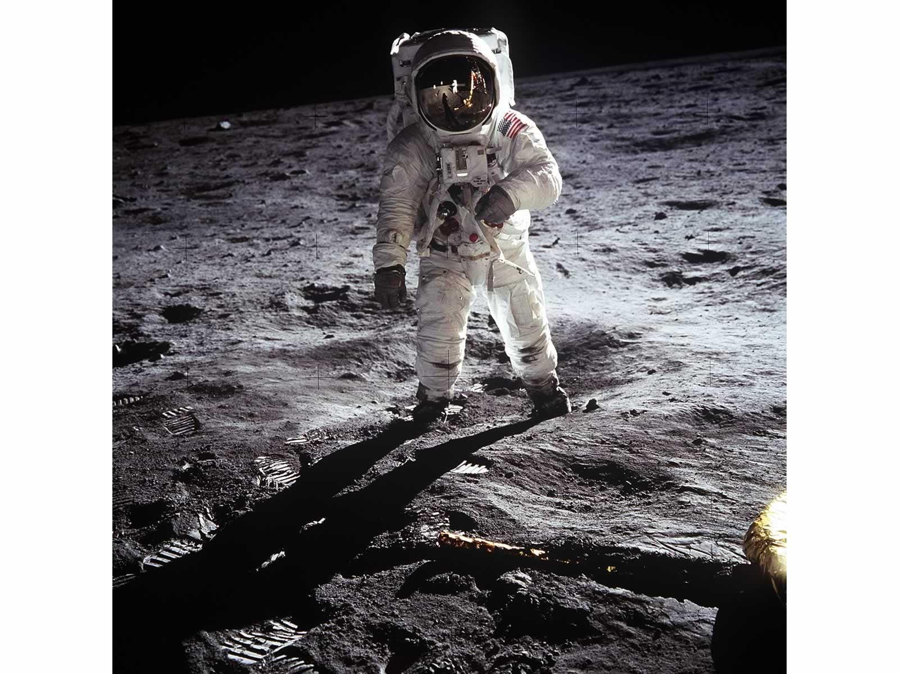

Astronomy Fun Facts

- A day in Mercury lasts approximately as long as 59 days on earth.
- From the moon, astronauts brought back 380 kg of Moon rock.
- The first rockets were made 1,000 years ago in China.
- The red color of Mars is due to oxidized (rusted) iron in its soil.
- Hubble's law showed that Universe is getting bigger and so must have started very small. This led to the idea of Big Bang.
- The largest moon in the Solar System is the Jupiter's moon Ganymede.
- The slowest rotating planet is Venus, which takes 243.01 days to turn around.
- The heart of a star reaches 16 million ºC. A grain of sand this hot would kill someone 150 km away.
- The Hiroshima bombs released 84 trillion joules of energy.
- A supernova releases 125,000 trillion trillion times as such.
- The moon's gravity is 17% of the Earth's so astronauts in space suits can jump 4 m high on the moon.